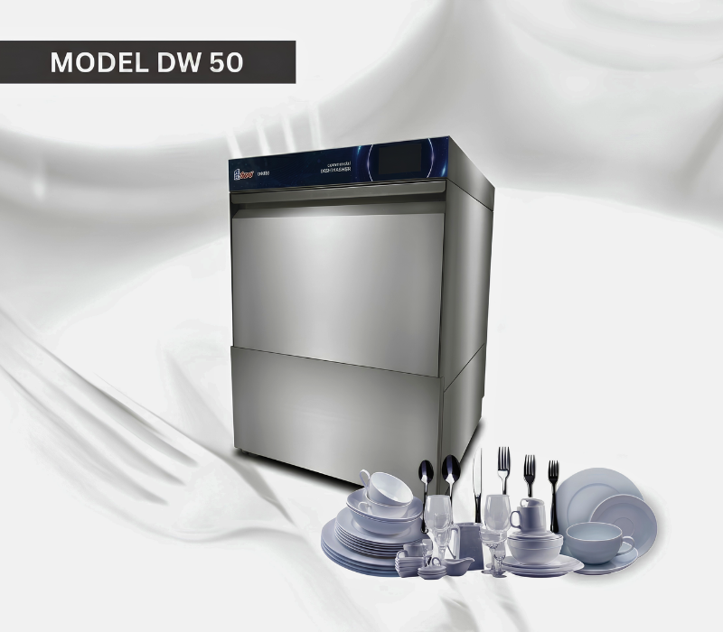
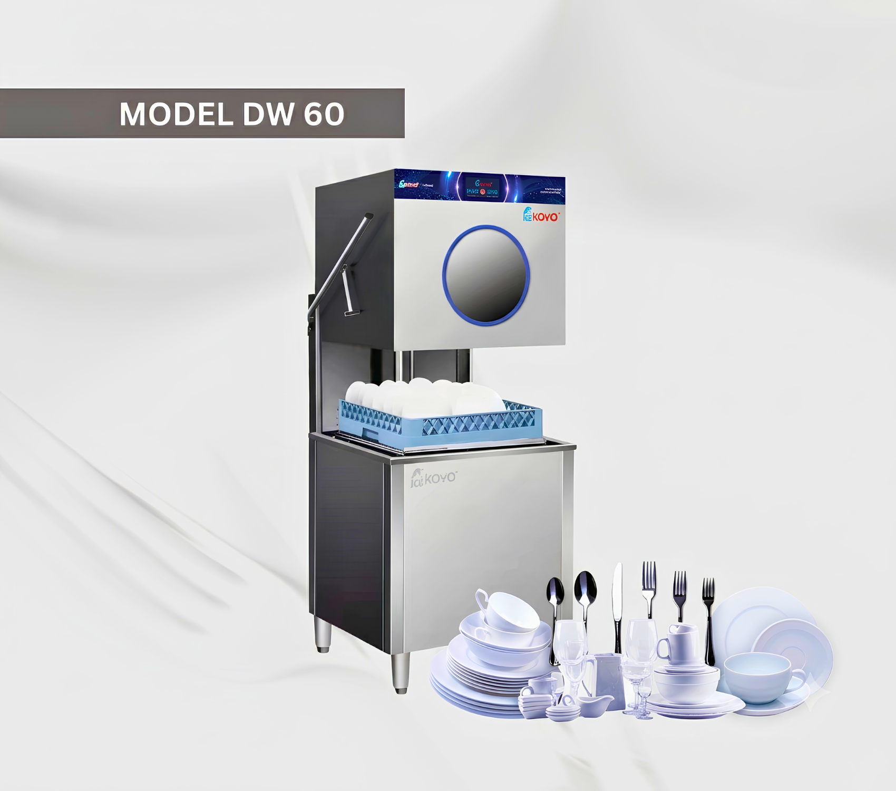

MIFB 2026 Exhibitor List to Feature the Best Koyo Corporate Commercial Dishwasher
As the local food industry grows increasingly competitive, maximizing kitchen efficiency and equipment automation has become a central priority for business operators. The upcoming tradeshow is slated to serve as a vital platform for showcasing these industry-defining technological breakthroughs. Taking place at the Kuala Lumpur Convention Centre, the highly anticipated execution of the MIFB 2026 exhibitor list will officially introduce next-generation warewashing systems designed to minimize labor reliance and streamline back-of-house clean-up workflows.
For modern food establishments aiming to optimize their washing configurations, discovering the correct Koyo Corporate commercial dishwasher package offers a reliable path toward maintaining impeccable sanitation benchmarks. Operating as an industry-leading commercial kitchen equipment supplier, Koyo delivers an engineered collection structurally tailored to fit distinct hospitality environments.
Small cafes, boutique bistros, and urban coffee bars managing compact spacing configurations can profit heavily from deploying the streamlined Koyo DW-50 undercounter variant. This professional unit tucks cleanly underneath standard counters while executing industrial cleaning cycles with elite energy compliance.

In contrast, high-volume dining outlets, heavy catering centers, and central institutional kitchens require deep cleaning support to comfortably bypass massive dishware accumulation problems. Commercial kitchen operators laying out comprehensive facility overhauls can comfortably scale up their throughput rates using premier commercial dishwasher Malaysia assets like the heavy-duty Koyo DW-60 machinery line.
This powerful hood-type pass-through system is uniquely architected for continuous rack washing operations, working closely alongside stainless steel sorting tables to keep high quantities of table plates cycling seamlessly throughout peak business hours.

The defining element separating modern hardware from legacy systems at the convention is the shift toward advanced cloud connectivity and smart operations tracking. The continuous market demand for innovative smart kitchen equipment Malaysia signals that facility owners want absolute precision regarding water, power, and chemical overheads. Both the Koyo DW-50 and DW-60 models come structurally equipped with these data tracking utilities, enabling stakeholders to evaluate sanitization records, cross-check thermal metrics, and monitor maintenance windows effortlessly.